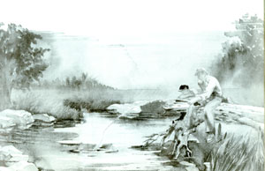

PHOTOGRAPHS ?MICHAEL SOLURI
1. With the rod in your hand as shown, hook the line, above the reel, with your finger and pinch it against the rod handle. 2. Open the bail on the reel (the wire ring that keeps the line from coming out). Now, face in the direction you want to cast with the rod in front of you and the sinker (or lure, etc.) just inches below its tip. 3. Lift the rod sharply until the tip is just behind yourhead. The weight of the sinker will bow the rod and add to the power of the cast. 4. Snap the rod forward to just past vertical (about 1 o'clock on an imaginary watch face). As the sinker starts moving forward, release the line held by your index finger, and the line should uncoil smoothly from the reel.